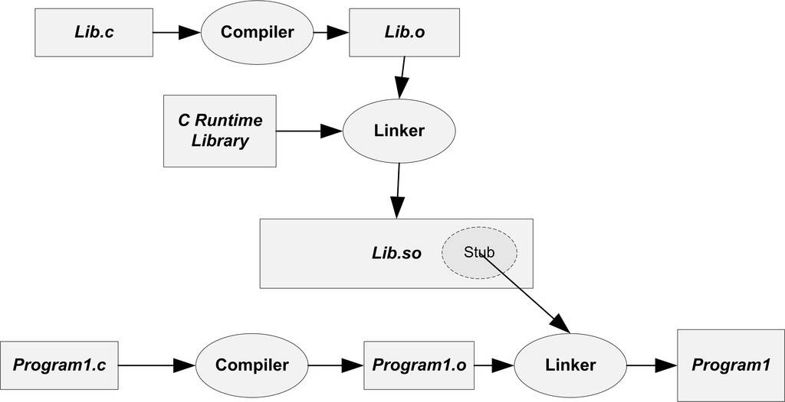

7.2 簡單的動態連結例子
Windows平台下的PE動態連結機制與Linux下的ELF動態連結稍有不同，ELF比PE從結構上來看更加簡單，我們先以ELF作為例子來描述動態連結的過程，接著我們將會單獨描述Windows平台下PE動態連結機制的差異。
首先透過一個簡單的例子來大致地感受一下動態連結，我們還是以圖7-2中的Program1和Program2來做演示。我們分別需要如下幾個原始檔：“Program1.c”、“Program2.c”、“Lib.c”和“Lib.h”。它們的原始碼如清單7-1所示。
清單7-1 SimpleDynamicalLinking
/* Program1.c */
#include "Lib.h"
int main()
{
foobar(1);
return 0;
}
/* Program2.c */
#include "Lib.h"
int main()
{
foobar(2);
return 0;
}
/* Lib.c */
#include <stdio.h>
void foobar(int i)
{
printf("Printing from Lib.so %d\n", i);
}
/* Lib.h */
#ifndef LIB_H
#define LIB_H
void foobar(int i);
#endif
程式很簡單，兩個程式的主要模組Program1.c和Program2.c分別呼叫了Lib.c裡面的foobar()函式，傳進去一個數字，foobar()函式的作用就是列印這個數字。然後我們使用GCC將Lib.c編譯成一個共享物件檔案：
gcc -fPIC -shared -o Lib.so Lib.c
上面GCC命令中的引數“-shared”表示產生共享物件，“-fPIC”我們稍後還會詳細解釋，這裡暫且略過。
這時候我們得到了一個Lib.so檔案，這就是包含了Lib.c的foobar()函式的共享物件檔案。然後我們分別編譯連結Program1.c和Program2.c：
gcc -o Program1 Program1.c ./Lib.so
gcc -o Program2 Program2.c ./Lib.so
這樣我們得到了兩個程式Program1和Program2，這兩個程式都使用了Lib.so裡面的foobar()函式。從Program1的角度看，整個編譯和連結過程如圖7-3所示。

Lib.c被編譯成Lib.so共享物件檔案，Program1.c被編譯成Program1.o之後，連結成為可執行程式Program1。圖7-3中有一個步驟與靜態連結不一樣，那就是Program1.o被連線成執行檔的這一步。在靜態連結中，這一步連結過程會把Program1.o和Lib.o連結到一起，並且產生輸出執行檔Program1。但是在這裡，Lib.o沒有被連結進來，連結的輸入目的檔只有Program1.o（當然還有C語言執行庫，我們這裡暫時忽略）。但是從前面的命令列中我們看到，Lib.so也參與了連結過程。這是怎麼回事呢？
關於模組（Module）
在靜態連結時，整個程式最終只有一個執行檔，它是一個不可以分割的整體；但是在動態連結下，一個程式被分成了若幹個檔案，有程式的主要部分，即執行檔（Program1）和程式所依賴的共享物件（Lib.so），很多時候我們也把這些部分稱為模組，即動態連結下的執行檔和共享物件都可以看作是程式的一個模組。
讓我們再回到動態連結的機制上來，當程式模組Program1.c被編譯成為Program1.o時，編譯器還不不知道foobar()函式的地址，這個內容我們已在靜態連結中解釋過了。當連結器將Program1.o連結成執行檔時，這時候連結器必須確定Program1.o中所引用的foobar()函式的性質。如果foobar()是一個定義與其他靜態目標模組中的函式，那麼連結器將會按照靜態連結的規則，將Program1.o中的foobar地址引用重定位；如果foobar()是一個定義在某個動態共享物件中的函式，那麼連結器就會將這個符號的引用標記為一個動態連結的符號，不對它進行地址重定位，把這個過程留到載入時再進行。
那麼這裡就有個問題，連結器如何知道foobar的引用是一個靜態符號還是一個動態符號？這實際上就是我們要用到Lib.so的原因。Lib.so中儲存了完整的符號資訊（因為執行時進行動態連結還須使用符號資訊），把Lib.so也作為連結的輸入檔案之一，連結器在解析符號時就可以知道：foobar是一個定義在Lib.so的動態符號。這樣連結器就可以對foobar的引用做特殊的處理，使它成為一個對動態符號的引用。
動態連結程式執行時地址空間分佈
對於靜態連結的執行檔來說，整個程式只有一個檔案要被對映，那就是執行檔本身，我們在前面的章節已經介紹了靜態連結下的程式虛擬地址空間的分佈。但是對於動態連結來說，除了執行檔本身之外，還有它所依賴的共享目的檔。那麼這種情況下，程式的地址空間分佈又會怎樣呢？
我們還是以上面的Program1為例，但是當我們試圖執行Program1並且檢視它的程式空間分佈時，程式一執行就結束了。所以我們得對程式做適當的修改，在Lib.c中的foobar()函式裡面加入sleep函式：
#include <stdio.h>
void foobar(int i)
{
printf("Printing from Lib.so %d\n", i);
sleep(-1);
}
然後就可以檢視程式的虛擬地址空間分佈：
$./Program1 & [1] 12985 Printing from Lib.so 1 $ cat /proc/12985/maps 08048000-08049000 r-xp 00000000 08:01 1343432 ./Program1 08049000-0804a000 rwxp 00000000 08:01 1343432 ./Program1 b7e83000-b7e84000 rwxp b7e83000 00:00 0 b7e84000-b7fc8000 r-xp 00000000 08:01 1488993 /lib/tls/i686/cmov/libc-2.6.1.so b7fc8000-b7fc9000 r-xp 00143000 08:01 1488993 /lib/tls/i686/cmov/libc-2.6.1.so b7fc9000-b7fcb000 rwxp 00144000 08:01 1488993 /lib/tls/i686/cmov/libc-2.6.1.so b7fcb000-b7fce000 rwxp b7fcb000 00:00 0 b7fd8000-b7fd9000 rwxp b7fd8000 00:00 0 b7fd9000-b7fda000 r-xp 00000000 08:01 1343290 ./Lib.so b7fda000-b7fdb000 rwxp 00000000 08:01 1343290 ./Lib.so b7fdb000-b7fdd000 rwxp b7fdb000 00:00 0 b7fdd000-b7ff7000 r-xp 00000000 08:01 1455332 /lib/ld-2.6.1.so b7ff7000-b7ff9000 rwxp 00019000 08:01 1455332 /lib/ld-2.6.1.so bf965000-bf97b000 rw-p bf965000 00:00 0 [stack] ffffe000-fffff000 r-xp 00000000 00:00 0 [vdso] $ kill 12985 [1]+ Terminated ./Program1
我們看到，整個程式虛擬地址空間中，多出了幾個檔案的對映。Lib.so與Program1一樣，它們都是被作業系統用同樣的方法對映至程式的虛擬地址空間，只是它們佔據的虛擬地址和長度不同。Program1除了使用Lib.so以外，它還用到了動態連結形式的C語言執行庫libc-2.6.1.so。另外還有一個很值得關注的共享物件就是ld-2.6.so，它實際上是Linux下的動態連結器。動態連結器與普通共享物件一樣被對映到了程式的地址空間，在系統開始執行Program1之前，首先會把控制權交給動態連結器，由它完成所有的動態連結工作以後再把控制權交給Program1，然後開始執行。
我們透過readelf工具來檢視Lib.so的載入屬性，就如我們在前面檢視普通程式一樣：
$ readelf -l Lib.so Elf file type is DYN (Shared object file) Entry point 0x390 There are 4 program headers, starting at offset 52 Program Headers: Type Offset VirtAddr PhysAddr FileSiz MemSiz Flg Align LOAD 0x000000 0x00000000 0x00000000 0x004e0 0x004e0 R E 0x1000 LOAD 0x0004e0 0x000014e0 0x000014e0 0x0010c 0x00110 RW 0x1000 DYNAMIC 0x0004f4 0x000014f4 0x000014f4 0x000c8 0x000c8 RW 0x4 GNU_STACK 0x000000 0x00000000 0x00000000 0x00000 0x00000 RW 0x4 Section to Segment mapping: Segment Sections... 00 .hash .gnu.hash .dynsym .dynstr .gnu.version .gnu.version_r .rel.dyn .rel.plt .init .plt .text .fini 01 .ctors .dtors .jcr .dynamic .got .got.plt .data .bss 02 .dynamic 03
除了檔案的型別與普通程式不同以外，其他幾乎與普通程式一樣。還有有一點比較不同的是，動態連結模組的載入地址是從地址0x00000000開始的。我們知道這個地址是無效地址，並且從上面的程式虛擬空間分佈看到，Lib.so的最終載入地址並不是0x00000000，而是0xb7efc000。從這一點我們可以推斷，共享物件的最終載入地址在編譯時是不確定的，而是在載入時，載入器根據當前地址空間的空閑情況，動態分配一塊足夠大小的虛擬地址空間給相應的共享物件。
當然，這僅僅是一個推斷，至於為什麼要這樣做，為什麼不將每個共享物件在程式中的地址固定，或者在真正的系統中是怎麼運作的，我們將在下一節進行解釋。